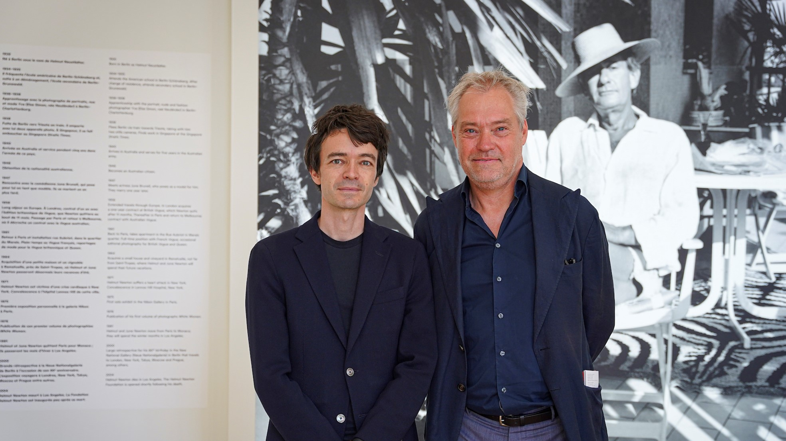
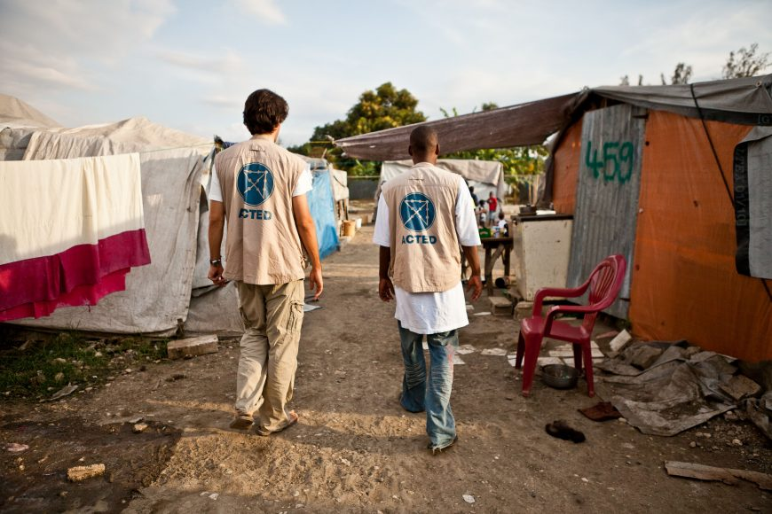
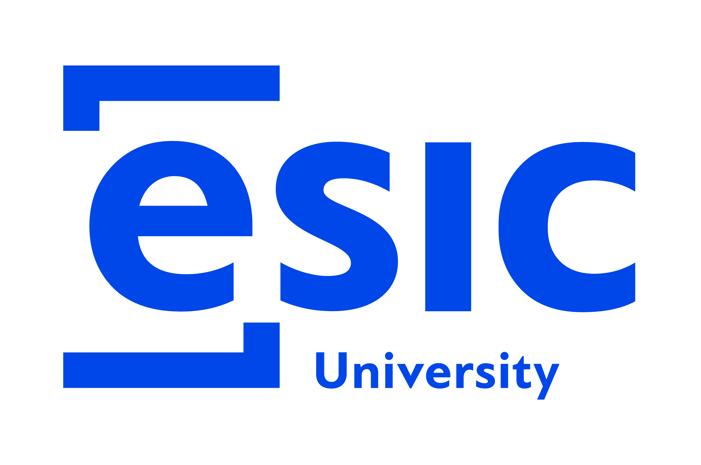

Actuellement en master 2 à l'Université Paris 2 Panthéon-ASSAS/IFP, je suis le parcours "Médias & Mondialisation".
Dans le cadre de ce master, je suis en alternance pour une durée de 12 mois, en tant qu'assistante Attachée de presse aux éditions Larousse.


Master Université Paris - Panthéon 2 ASSAS/IFP
Master "Médias & Mondialisation" ~ septembre 2023 - 2025 → Paris
ESSEC BUSINESS SCHOOL
Programme BBA ~ septembre 2020 - 2024 → Cergy
Mémoire sur la question de recherche : Comment les médias d'information en ligne peuvent-ils utiliser le digital pour attirer les jeunes étudiants français de 18 à 24 ans vers l'actualité ?
ESIC BUSINESS & MARKETING SCHOOL
Echange universitaire ~ Janvier 2023 à juin 2024 → Madrid
Attachée de Presse ~ Larousse
Alternance 2024 - 2025 → Paris
Collaboratrice Communication ~ Acted
Stage Janvier 2024 à Juillet 2024 → Paris
Collaboratrice Communication ~ Suisscourtage
Stage volontaire Juin 2023 à Juillet 2023 → Monaco
Journaliste ~ La Gazette de Monaco
Stage volontaire Juin 2022 à Juillet 2022 → Monaco